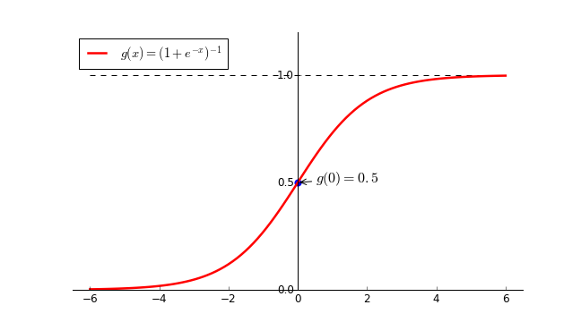

广义线性模型
上一篇文章中介绍了线性模型：
$$
y = \theta ^ \mathrm{T} x \tag{1}
$$该模型虽然简单，但却富于变化。例如，假设样例对应的输出在指数上变化，我们可以将输出的对数作为逼近目标得到对数回归模型，即：
$$
\ln{y} = \theta ^ \mathrm{T} x \tag{2}
$$更一般地，考虑单调可微函数 $ f(\cdot) $，令
$$
y = f ^ {-1} (\theta ^ \mathrm{T} x) \tag{3}
$$即可得到广义线性模型。其中 $ f(\cdot) $ 的作用是联系模型输出与样例真实标记，称之为联系函数。
逻辑回归
根据上面理论，如果能找到一个函数使得线性回归产生的预测值 $ z = \theta ^ {T} x $ 映射到真实标记 $ \lbrace 0, 1 \rbrace $ 中，即可将线性模型用于分类任务。最理想的是单位阶跃函数：
$$
y =
\begin{cases}
0, & \text{ $ z $ < 0 } \\
0.5, & \text{ $ z $ = 0} \\
1, & \text{ $ z $ > 0} \\
\end{cases}
\tag{4}
$$但是该函数不可导，不能作为式（3）中的 $ f ^ {-1} (\cdot) $。Sigmoid函数是一个常用的替代方案：
$$
g(z) = \frac {1} {1 + e ^ {-z}} \tag{5}
$$该函数将$ z $映射到 $ (0, 1) $ 之间，$ g(0) = 0.5 $，其函数如下图所示：

可认为$ g(z) $的值为样本属于正类的概率，则若 $ z > 0.5$，则判定该样本为正类，$ z < 0.5 $判定该样本为负类。将 $ g(z) $ 作为 $f ^ {-1}$ 代入式（3）中得到假设函数：
$$
h(x) = \frac {1} {1 + e ^ {-\theta ^ \mathrm{T} x}} \tag{6}
$$该模型便称之为逻辑回归。剩下的问题就是求解 $ \theta $了。
最大似然
上节提到逻辑回归的模型输出 $ h(x) $ 可看作样本 $x$ 属于正类的后验概率，那么属于负类的后验概率自然是 $ 1 - h(x) $，用概率的形式可表示为：
$$
\begin{align}
&p(y = 1 | x; \theta) = h(x) \\\
&p(y = 0 | x; \theta) = 1 - h(x)
\end{align}\tag{7}
$$
于是求解 $ \theta $ 相当于参数估计，可用最大似然法。
给定数据集 $ \lbrace (x_ i, y_ i) \rbrace _{i = 1} ^ {m}$，似然函数为：
$$
l(\theta) = \sum_ {i = 1} ^ {m} \ln{p(y_ i|x_ i; \theta)} \tag{8}
$$其中：
$$
\ln{p(y_ i|x_ i; \theta)} =
\begin{cases}
\ln{p(y_ i = 1| x_ i; \theta)} = \ln{h(x ^ {i})}, &\text{ $ y_ i $ = 1 } \\
\ln{p(y_ i = 0| x_ i; \theta)} = \ln{(1 - h(x ^ {i}))}, &\text{ $ y_ i $ = 0 }
\end{cases}
\tag {9}
$$
根据式（9），式（8）可重写为：
$$
l(\theta) =
\sum_ {i = 1} ^ {m} y_ i \ln{h(x ^ {i})} + (1 - y_ i) \ln {(1 - h(x ^ {i}))} \tag{10}
$$
问题即变成：
$$
\max_ {\theta} l(\theta) \tag{11}
$$令 $ J(\theta) = -l(\theta) $，式（11）等同于：
$$
\min_ {\theta} J(\theta) =
\sum_ {i = 1} ^ {m} -y_ i \ln{h(x ^ {i})} - (1 - y_ i) \ln {(1 - h(x ^ {i}))} \tag{12}
$$因为式（12）中的两项对于每个 $ i $ 不能同时取到，并且 $ -\ln{x} $ 与 $ -\ln{(1 - x)} $均为单调函数，故 $ J(\theta) $ 为凸函数（凸函数的线性叠加也是凸函数），可用梯度下降法求得最优解。
其过程为：
$$
\begin{align}
&\text{Repeat until convergence}\lbrace\\
&\qquad \theta_ j = \theta_ j - \alpha \sum_ {i = 1} ^ {m} (h(x^{i}) - y ^ {i}) x_ {j} ^ {i}
&\qquad(j = 0,1,2,\cdots,n) \\
&\rbrace\\
\end{align}
$$